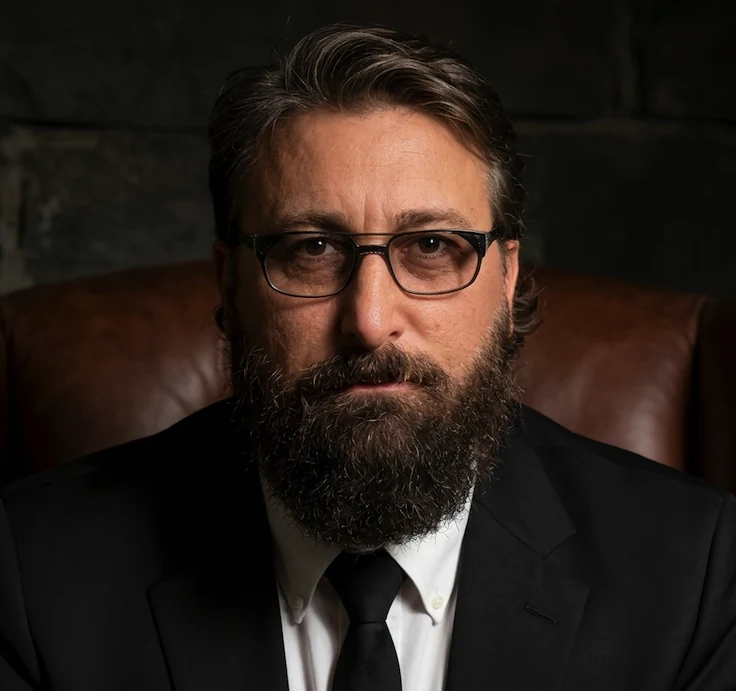

My work connects accountable leadership, hands-on systems building, and a deliberate return to scholarship.

Kerry Thornhill / Researcher & systems builder
The questions grew from the work.
I came to research after years of responsibility for operational decisions: records had to be reliable, rules had to be interpreted, teams had to coordinate, and systems had to work under real constraints.
That experience made me attentive to the distance between a process that runs smoothly and a decision that can withstand scrutiny. Learning to build the infrastructure brought the issue into sharper focus. Every permission, data source, and workflow shapes what people can know and do.
Interdisciplinary study gives me the space to examine those relationships more carefully. I draw on the humanities to question concepts and assumptions, on systems practice to trace operational choices, and on emerging empirical training to make the questions testable.
Experience / A cumulative foundation
From responsibility to inquiry.
2012–presentReal estate brokerage
Leading people through consequential decisions.
As a Texas real estate broker, I have managed sales operations, financial accountability, CRM-driven pipelines, and the work of more than fifty agents. The experience developed my ability to communicate across different kinds of expertise, organize complex information, and make judgments under uncertainty.
2020–2024Transportation operations
Solving problems across a distributed system.
As owner and operations director of Ave Maria Transport, I managed over-the-road transportation across forty-eight states. Safety audits, maintenance records, route planning, and contract negotiation demanded initiative, persistence, and attention to the relationship between a rule and its practical application.
Across these rolesDigital infrastructure
Building the systems behind the work.
I designed cloud infrastructure and connected data, communications, and operational workflows for business and nonprofit settings. Hands-on work with automation, permissions, and versioned records developed a habit of tracing how information moves—and where responsibility sits.
2024–presentDG Humana Institute
Creating room for a larger public purpose.
I founded DG Humana Institute to develop an independent setting for inquiry into ethical technology, human dignity, and the future of work. Its direction connects research, public communication, and dialogue with civic and nonprofit communities.
Graduate work connecting ethical technology, civic leadership, and human-centered innovation, alongside a developing research direction in human–AI judgment and contestability.
Bachelor of Arts in Interdisciplinary Studies
Completed 2025
Concentrations in the humanities and Western and world literature.
The direction ahead
Turn experience into questions. Turn questions into knowledge.
I’m working toward an interdisciplinary research career that joins careful analysis, empirical investigation, and public communication—and helps others find their own route into inquiry.